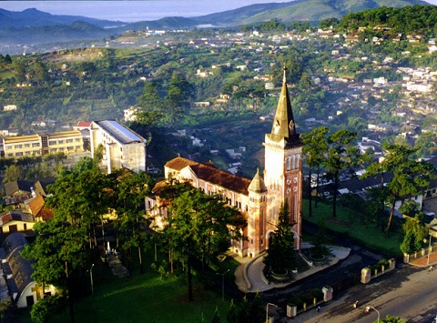
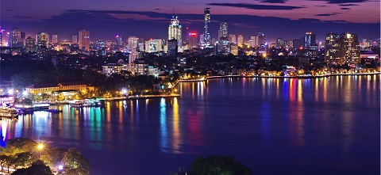
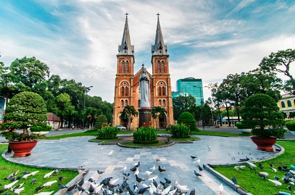
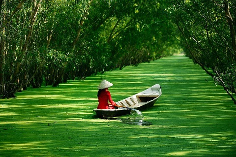
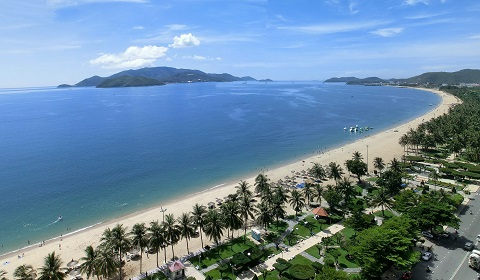
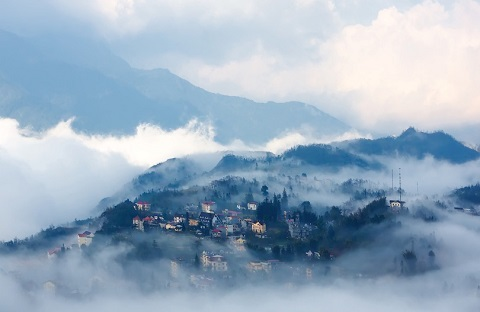

Dalat which is also my hometown, I have lived in there for 20 years before coming to Finland to study.
Da Lat is the capital city of Lam Dong province, Vietnam, it is called the city of flowers and honeymooners
with the architecture of French. For example: Dalat Cathedral which has a wonderful architectural style and
beautiful view.

Dalat Cathedral
6 Ha Noi
For the last century, Hanoi has the Indochina and Vietnam Wars to emerge
as the booming capital city of a reunified Vietnam. At the heart of Hanoi
is its Old Quarter, an open-air museum of historic Asian and French colonial
architecture that has largely remained intact despite the bombings of
Vietnam War. Here among scenic tree-lined boulevards, tourists can browse
markets, sip coffee at quaint cafes and visit prominent sites like the Grand
Opera House, the Presidential Palace and Saint Joseph Cathedral.

Vietnam's capital, Ha Noi city
5 Ho Chi Minh City
Ho Chi Minh City is the largest city of the reunified country, offering plenty of reasons to visit, from its blend of
historic and modern attractions to vibrant shopping, dining and nightlife. Actually, I have been to Ho Chi Minh city several times,
one of the things that I do not like about this place is that it's too hot, the temperature is always ranging from 27 to 30 degrees. However,
, other things like food, or Notre Dame Cathedral are worth to travel to this city.

Notre Dame Cathedral
4 Mekong Delta
Colorful floating markets, fruit orchards, rice paddies, sugar cane groves, bird sanctuaries and quaint
villages are all what draw many to the Mekong Delta in southwestern Vietnam. Nicknamed “Vietnam’s Rice Basket,”
the Mekong Delta is an agricultural region made fertile by the maze of canals and streams fed by the Mekong River.
Stretching from the Gulf of Thailand to Ho Chi Minh City, the Mekong Delta feeds more than a third of the country from
its rich plantations, orchards, rice paddies and fish farms.

Mekong Deltal
3 Nha Trang
Nha Trang is well known for its beaches and scuba diving and has developed into a popular destination for international
tourists, attracting large numbers of backpackers, as well as more affluent travelers on the south-east Asia circuit; it
is already very popular with Vietnamese tourists, with Nha Trang Bay widely considered as among the world's most beautiful
bays.Tourists are welcome to participate in the Sea Festival, held biennially. Nha Trang was the site of
the Miss Universe 2008 Pageant on July 14, 2008 and Miss Earth 2010 was held on December 4, 2010. It was also the site for
the April 14, 2015 season 8 finale of Face Off. Nha Trang has been approved to host the 2016 Asian Beach Games.

Nha Trang beach
2 Sapa
Surrounded by pictorial mountains, rice terraces and a diversity of hill
tribes in the remote northwest of Vietnam, Sapa is a quiet town frequently
used as a base for trekking in the Hoang Lien Son Mountains and touring rice
paddies and traditional villages. From the town, there are many organized tours
that aide tourists in mountain hikes and exploring the nearby rice paddies and
remote villages. These tours present views of beautiful waterfalls and the
opportunities to experience the food, customs and way of life among the local tribes.

Sa Pa
1 Ha Long Bay
With its aqua-green water and cluster of limestone rocky outcrops rising
from the water like sea dragons, Ha Long Bay resembles a scene from a fantasy
story. Located about 130 km (80 miles) east of Hanoi in northern Vietnam, this
otherworldly bay features more than 2,000 jungle-covered islands pitted with
intriguing caves, grottoes, sinkholes and lakes. Many of the islands have been
sculpted over the centuries by natural processes into fantastic formations.